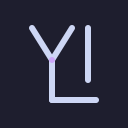
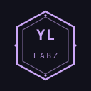
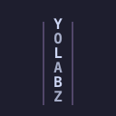
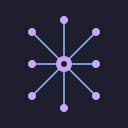

Concept #1
lab-flask
Geometric Erlenmeyer + circuit-trace lattice. Reads as experimentation + signed releases. Mauve outline on base. Strong at 64-256 px, may need stroke-weight bump at 16-32 favicon.
Five concept directions for Pedro pick. All Catppuccin Mocha tokens, anti-slop discipline (no gradient hero, no glassmorphism, no sparkle). Editorial typographic restraint anchored on Linear / claude.com 2025 / GitHub Primer.
Geometric Erlenmeyer + circuit-trace lattice. Reads as experimentation + signed releases. Mauve outline on base. Strong at 64-256 px, may need stroke-weight bump at 16-32 favicon.

Custom Y-L ligature, single-stroke. Editorial identity. Reads cleanly at all sizes. Lowest-overhead visual identity; relies on wordmark to convey "labz" semantics.

Notched hexagonal seal + YL/LABZ stack. Strongest narrative tie-in to SLSA/Sigstore supply-chain story. Ships as v0.1 [provisional] if Pedro misses 48h SLA per spec plan §4 pre-rank.

Vertical Y-O-L-A-B-Z stack, text+subtext0 alternation. Editorial typographic system. Strong wordmark presence; weak as favicon (needs single-glyph variant).

Fan-out graph node, mauve nodes + blue edges. Visualizes portfolio composition. Reads as "system of repos". May feel generic at small sizes; works best paired with wordmark.
Reply OK #N with concept number (1-5) for finals. Reply mix + concept numbers for hybrid exploration. No reply within 48h → ship stamp-seal #3 as v0.1 [provisional] per spec plan §4 fallback rank.
Finals render at 4 sizes (64/128/256/512) × 2 modes (dark/light) per pick. Favicon grid + wordmark lockup + monochrome variant follow same pick.